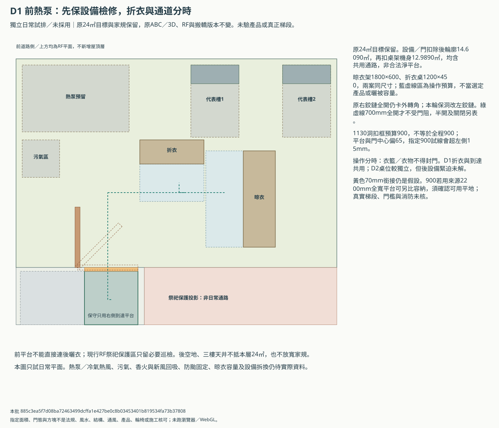
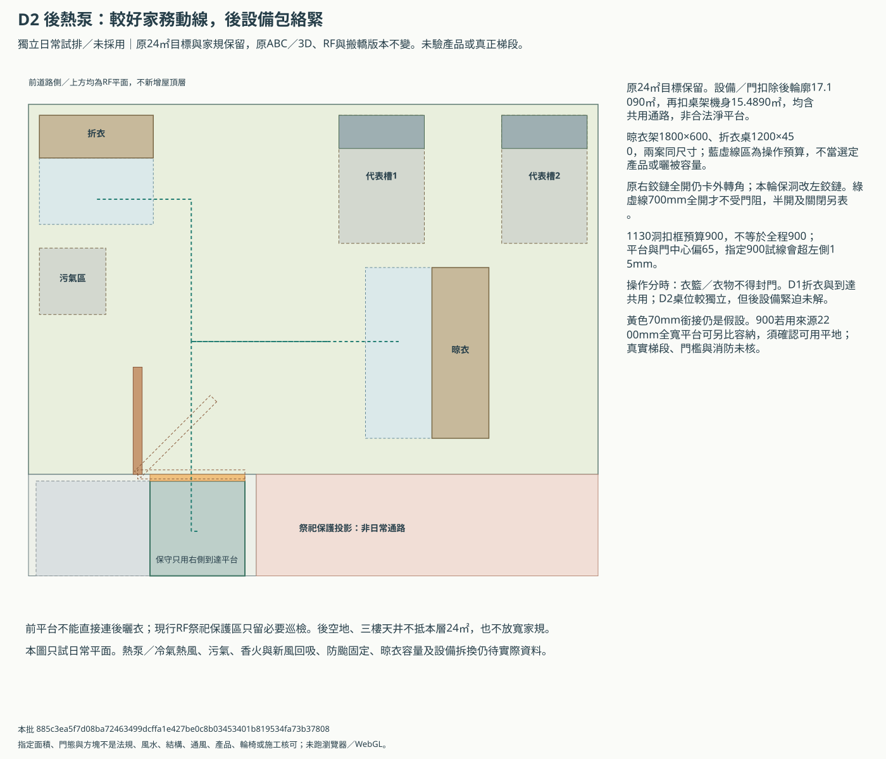
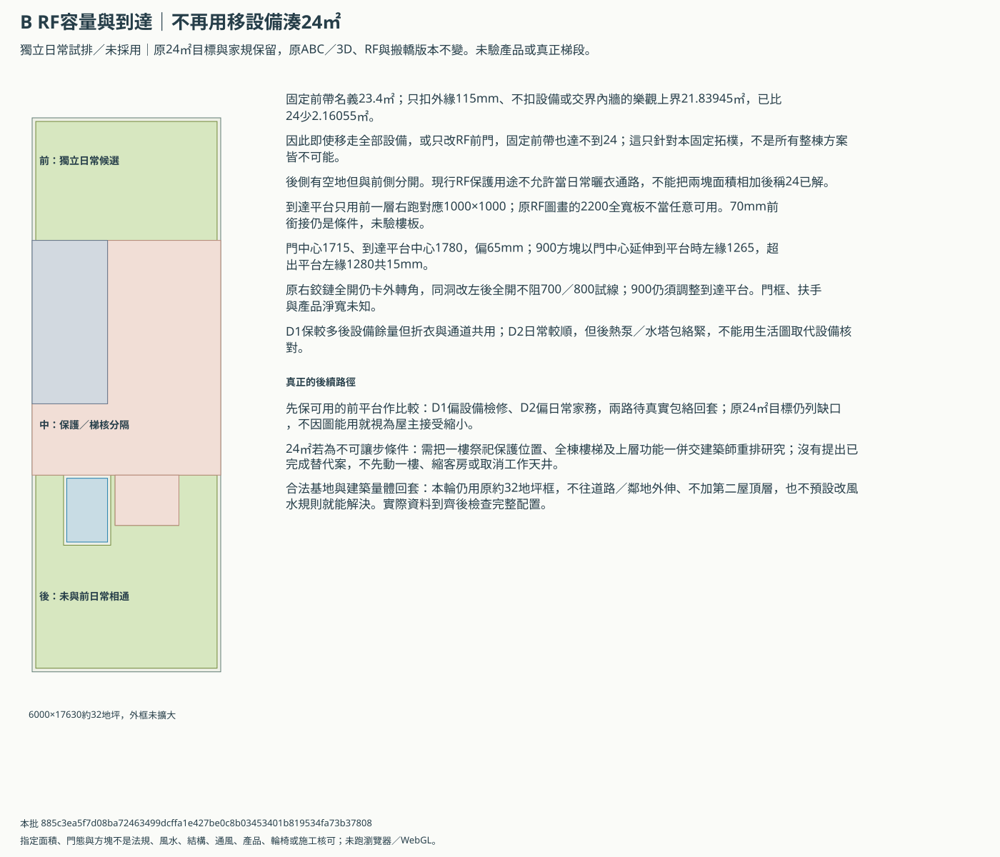

B屋頂日常使用與24㎡容量界
獨立比較／未採用。原24㎡活動曬衣及家規保留；不把10㎡下限當接受縮平台，不改ABC／3D或搬轎版本。
固定前帶無法靠移機／改門湊24㎡。D1先保較寬鬆設備但折衣與通道分時；D2日常操作較順但後設備緊迫。兩案補入同尺寸桌架及RF前門三態，700／800試線可在條件地面通，900仍有到達平台偏移缺口。先保完整比較，24㎡及家規不改，待實際資料再取捨。
固定前帶只扣外緣的樂觀上界21.83945㎡，還沒扣設備就比24少2.16055㎡；後側因現行保護／梯核分隔不能以日常路徑相加。不是靠再微移一台設備能補足。
| 方案 | 設備／門後輪廓㎡ | 再扣桌架機身㎡ | 折衣與到達共用 | 原24㎡目標 |
|---|---|---|---|---|
| D1 前熱泵：先保設備檢修，折衣與通道分時 | 14.6090 | 12.9890 | 有，需分時 | 保留缺口，未接受縮小 |
| D2 後熱泵：較好家務動線，後設備包絡緊 | 17.1090 | 15.4890 | 列明操作帶不共用 | 保留缺口，未接受縮小 |
面積均含共用通路，是紙上輪廓，不能當完整功能、合法淨面積或產品核可。晾衣架1800×600與折衣桌1200×450只是同尺寸比較，未增加洗衣機或排水。
D1 前熱泵：先保設備檢修，折衣與通道分時


D2 後熱泵：較好家務動線，後設備包絡緊


為何24㎡不足與前門到達的真正缺口


門洞預算與連續到達分開
原候選RF右鉸鏈門全開仍卡外側轉角，本輪保同洞改左鉸鏈，只有全開才不阻本輪700mm到達。1130洞扣兩邊115後雖有900預算，但平台中心與門偏65mm，指定900試線向保守平台左側超出15mm；若來源2200mm全寬平台確認為可用平地，900可在另一候選模型內容納。700／800只是條件地面試線；真實樓梯、70mm前銜接、門檻與產品仍未知，半開及關閉均受阻。
保留的決策路徑
- 先保可用的前平台作比較：D1偏設備檢修、D2偏日常家務，兩路待真實包絡回套；原24㎡目標仍列缺口，不因圖能用就視為屋主接受縮小。
- 24㎡若為不可讓步條件：需把一樓祭祀保護位置、全棟樓梯及上層功能一併交建築師重排研究；沒有提出已完成替代案，不先動一樓、縮客房或取消工作天井。
- 合法基地與建築量體回套：本輪仍用原約32地坪框，不往道路／鄰地外伸、不加第二屋頂層，也不預設改風水規則就能解決。實際資料到齊後檢查完整配置。
其餘條件與未解代價
- 沿S1／S2相同設備與R1天井作獨立日常使用比較，不改原ABC／3D、搬轎兩版、屋頂原快照或原24㎡活動曬衣目標。
- 前帶名義外框23.4㎡，扣本輪115mm外緣但不扣設備的樂觀上界21.83945㎡；只證明固定前帶不足24，不證明所有整棟重排都不可能。
- 前後可用區被現行祭祀保護投影及梯核分成兩個區塊，後側不能以日常路徑和前側相加。本輪沿現行非日常保護用途，不宣稱所有傳統風水都禁止通行。
- 屋頂前門仍是候選；從凍結樓梯右側1000mm到達平台起算，70mm前銜接帶及門檻同標高只作條件假設，實際3F至RF梯段、梁板、扶手與消防未核。
- 1130mm名義門洞扣兩邊各115只得900mm預算，不當產品完成淨寬。此門與到達平台中心偏65mm，指定900mm折線會超出保守右側平台15mm；700／800mm算術可通不當輪椅、搬整機或法定值。
- 四邊內縮不是實際牆厚／護欄規格，門框、把手、五金、防雨與門檻不可藉算式選定；若要900連續目標，先調整平台／門組再重算，不把名義門洞當全程完成。
- 原RF候選前門右鉸鏈全開仍卡指定外側轉彎；本輪同洞改左鉸鏈，門全開、半開、關閉各自核。只有全開的指定700mm日常試線無門片阻擋，半開及關閉不視為可用。室外門防風、避免自動回關或被衣物擋住仍需產品及管理設計。
- 晾衣架1800×600與折衣桌1200×450是自行設定的代表包絡，兩案同尺寸，不是已選商品、容量、桿高、晾被或防颱核可；不增洗衣機、地排或濕台。
- D1折衣操作帶與通道共用，應分時；共用不重算專用面積，也不承諾有人折衣時另一人仍可通過。作業及暫放衣籃不得封住唯一門路。D2另擺桌位減少此共用，但後設備仍緊迫。
- 兩案家具機身及列明操作帶均避設備完整預留；晾衣與維修在指定平面下不碰列明機身，但熱風、污氣、曬衣污染與真正檢修姿勢仍未知。
- 桌架沒有設在前門掃掠或700mm門路上；不從視覺大空白推定可同時聚會、晾被及拆換機器。實際風向、雨天、止滑、排水、照明及室外電安全待核。
- S2後水塔至污水井零間隙、至熱泵預留僅65mm的緊迫仍在；日常動線較好不代表整案較好施工。前後進排氣、香火與新風分系統關卡亦保留。
- 本輪不將RF前門、代表家具或日常試線併主3D，不變更66項candidate需求及105項unknown紀錄。家規、法規、結構、產品、通風與施工核可均未知。
capacity.csv／door-route-matrix.csv／arrival-widths.csv／operation-sharing.csv／decision-paths.csv／engineering-replies.csv
本批 885c3ea5f7d08ba72463499dcffa1e427be0c8b03453401b819534fa73b37808；未跑瀏覽器／WebGL，未取得專業或風水核可。